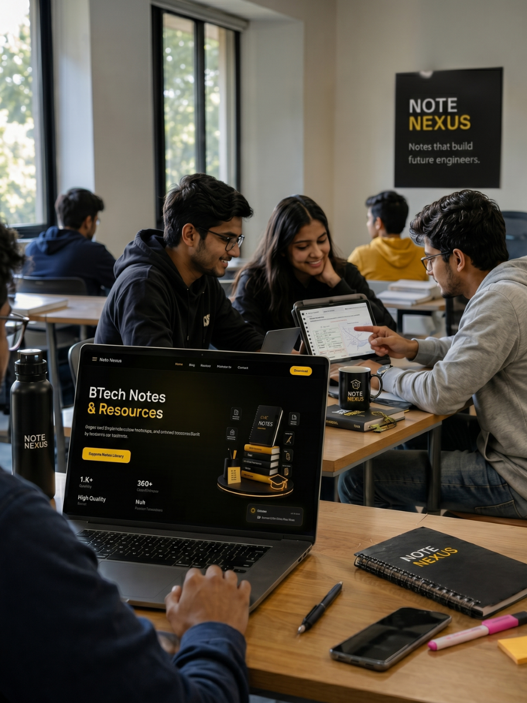
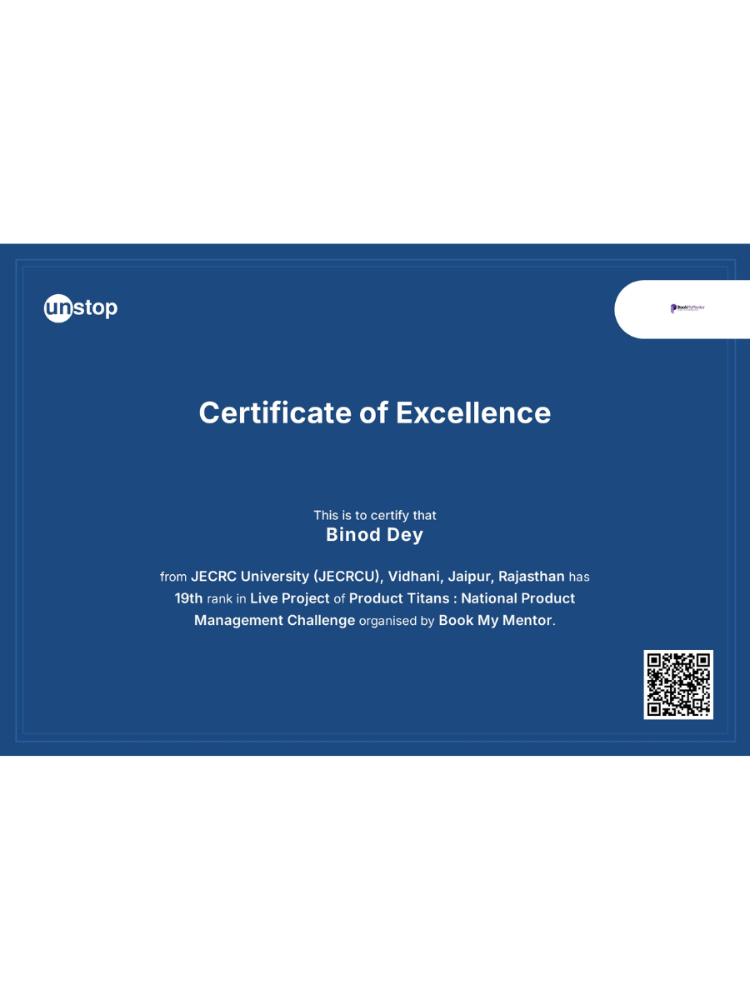
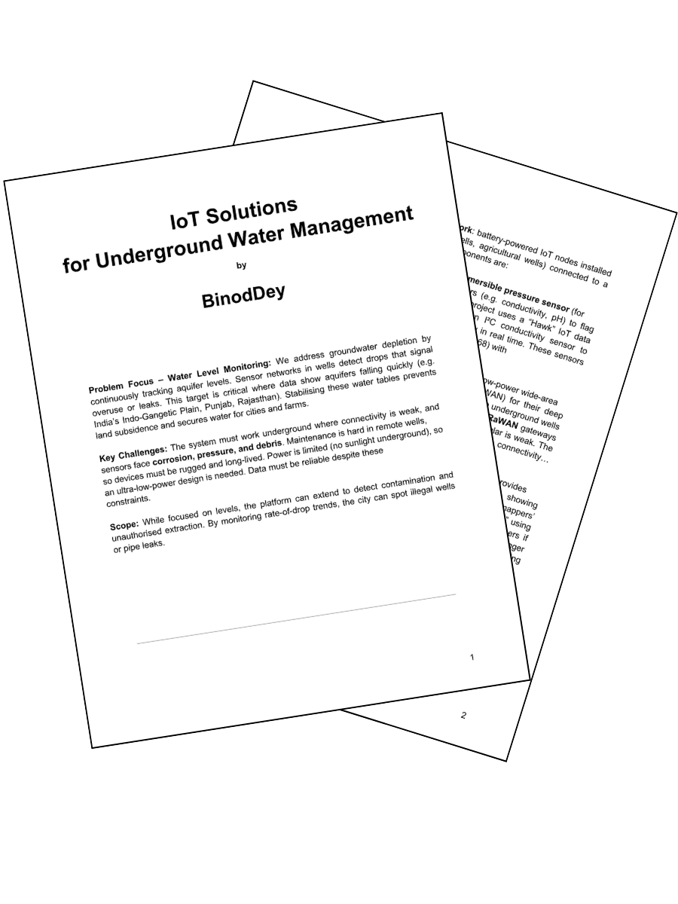
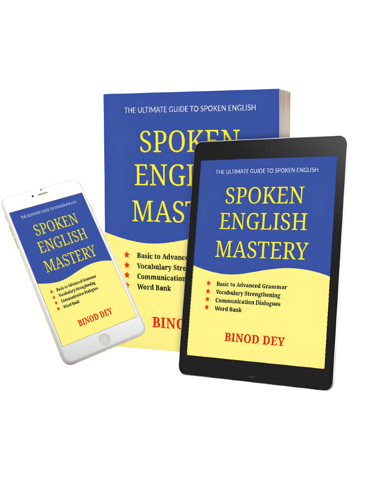

<!DOCTYPE html>
<html lang="en">
<head>
<meta charset="UTF-8" />
<meta name="viewport" content="width=device-width, initial-scale=1.0" />
<title>Binod Dey - Data x AI/title>
<meta name="description" content="Alex Rivera. Product engineer, film photographer, and part-time trail crew volunteer based in Austin, TX. A running log of what I've made — in code and out of it." />
<link rel="preconnect" href="https://fonts.googleapis.com">
<link rel="preconnect" href="https://fonts.gstatic.com" crossorigin>
<link href="https://fonts.googleapis.com/css2?family=Fraunces:ital,opsz,wght@0,9..144,300;0,9..144,500;0,9..144,600;1,9..144,500&family=Space+Grotesk:wght@400;500;600&family=JetBrains+Mono:wght@400;500&display=swap" rel="stylesheet">
<link rel="stylesheet" href="styles.css" />
</head>
<body>

<div class="grain"></div>

<header class="nav" id="nav">
  <a href="#top" class="nav__mark">BD<span class="nav__dot">.</span></a>
  <nav class="nav__links">
    <a href="#about"><span class="nav__idx">01</span>About</a>
    <a href="#work"><span class="nav__idx">02</span>Projects</a>
    
    <a href="#writing"><span class="nav__idx">03</span>Writings</a>
    <a href="#interests"><span class="nav__idx">03</span>Off the clock</a>
    <a href="#skills"><span class="nav__idx">04</span>Skills</a>
    <a href="#contact"><span class="nav__idx">05</span>Contact</a>
  </nav>
  <button class="nav__toggle" id="navToggle" aria-label="Toggle menu">
    <span></span><span></span>
  </button>
</header>

<main id="top">

  <!-- HERO -->
  <section class="hero">
    <div class="hero__inner">
      <p class="hero__eyebrow mono">hello.world()</p>
      <h1 class="hero__title">
        I'm Binod —<br>
        <span class="hero__title-alt">engineer by trade, maker by habit.</span>
      </h1>
      <div class="hero__terminal mono">
        <span class="hero__prompt">binod@life ~ %</span>
        <span class="hero__typed" id="typed"></span><span class="hero__cursor" aria-hidden="true">▌</span>
      </div>
      <p class="hero__sub">
        Founder of NoteNexus and a Computer Science student in Jaipur, India. I build products that make engineering education simpler, document what I learn about AI and startups, and spend the rest of my time shipping ideas, reading, or chasing the next ambitious project.
      </p>
      <div class="hero__cta">
        <a href="#work" class="btn btn--primary">See the projects<span class="btn__arrow">→</span></a>
        <a href="#contact" class="btn btn--ghost">Get in touch</a>
      </div>
    </div>
   
  </section>

  <!-- ABOUT -->
  <section class="about" id="about">
    <div class="section-head reveal">
      <span class="section-head__idx mono">01 / About</span>
      <h2 class="section-head__title">About me</h2>
    </div>
    <div class="about__grid">
      <div class="about__photo reveal">
        <div class="about__photo-frame">
          
        </div>
        
      </div>
      <div class="about__copy reveal">
        <p>
          I'm Binod—a third-year B.Tech Computer Science student, learning AI Engineering and building Note Nexus currently.
          I started building Note Nexus after seeing a recurring problem among engineering students: many of the brightest minds struggled not because they lacked ability, but because they lacked structured, reliable learning resources. Complex subjects were scattered across handwritten notes, PDFs, YouTube videos, and messaging groups, making effective learning unnecessarily difficult.
        </p>
        <p>
          My interest in education began long before college. At the age of 15, I published my first book on English grammar, which went on to become an Amazon bestseller and reached more than 5,000 learners across 12 countries. That experience reinforced a belief I continue to build around today: well-structured learning systems can significantly improve outcomes.
        </p>
        <p>
          Today, I'm building Note Nexus—a platform designed to help B.Tech students learn more efficiently through curated notes, doubt support, and guided learning pathways. The goal is simple: create the resource hub I wish I had during my first year of engineering.
        </p>
        <p>
          So far, NoteNexus has grown to 2,300+ users with 350+ educational resources, while I continue balancing product development, user growth, and operations alongside my undergraduate studies.
        </p>

        <!-- <p>
          I'm always interested in connecting with product leaders, educators, founders, and researchers who are passionate about improving learning through technology. Whether it's discussing EdTech, AI-powered education, product strategy, or user research, I value meaningful conversations and collaborative problem-solving.
        </p>
        <p>
          If you're building in education or exploring how technology can create better learning experiences, I'd be glad to connect.
        </p> -->
      </div>
    </div>
  </section>

  <!-- WORK / CHANGELOG -->
  <section class="work" id="work">
    <div class="section-head reveal">
      <span class="section-head__idx mono">02 / Projects</span>
      <h2 class="section-head__title">Changelog</h2>
      <p class="section-head__sub">Everything I've built or kept building — code and otherwise. Newest first.</p>
    </div>

    <div class="changelog">

      <article class="entry reveal">
        <div class="entry__tag">
          <span class="entry__version mono">2025 - Present</span>
        </div>
        <div class="entry__body">
          <h3 class="entry__title">Note Nexus</h3>
          <p class="entry__role mono"></p>
          <p class="entry__desc">
            A student-first academic platform helping engineering students access high-quality notes, resources, and opportunities — built by student, for students, with a focus on simplifying learning and career growth.
          </p>
          <ul class="entry__notes">
            <li><span class="diff diff--add mono">+</span> Built and launched a platform for BTech Students</li>
            <li><span class="diff diff--add mono">+</span> Grew the platform to 500+ users within a month of its launch</li>
            <li><span class="diff diff--add mono">+</span> Drove product development, building and launching at notenexus.in</li>
          </ul>
          <div class="entry__stats">
            <div class="stat"><span class="stat__num">2300+</span><span class="stat__label mono">Users</span></div>
            <div class="stat"><span class="stat__num">350+</span><span class="stat__label mono">Resources</span></div>
          </div>
          <a href="https://notenexus.in" target="_blank" class="entry__link mono">view project ↗</a>
        </div>
        <div class="entry__media reveal">
          <div class="entry__media-frame">
            
            
          </div>
        </div>
      </article>

      <article class="entry reveal">
        <div class="entry__tag">
          <span class="entry__version mono">2026</span>
        </div>
        <div class="entry__body">
          <h3 class="entry__title">IndusAssure</h3>
          <p class="entry__role mono">Product Management Hackathon Project foor IndusInd Bank</p>
          <p class="entry__desc">
            IndusAssure is an AI-powered insurance super app concept designed for the IndusInd Bank ecosystem. It transforms insurance from a one-time purchase into a proactive, personalized protection experience by combining Artificial Intelligence, banking insights, and an intuitive mobile-first interface. <br> <br>
            Developed as part of Product Matters 6.0, a Product Management & Design Competition organized by E-Cell, IIT Guwahati
          </p> 
          <a href="https://indusassure.netlify.app" target="_blank" class="entry__link mono">view project ↗</a>
        </div>
        <div class="entry__media reveal">
          <div class="entry__media-frame">
            
             
          </div>
        </div>
      </article>

      <!-- <article class="entry reveal">
        <div class="entry__tag">
          <span class="entry__version mono">2025 - 2026</span>
        </div>
        <div class="entry__body">
          <h3 class="entry__title">Nexora - AI Adaptive Learning System (beta)</h3>
          <p class="entry__role mono"> Developed AI EdTech Solution</p>
          <p class="entry__desc">
            An AI-driven student learning platform that personalizes practice, identifies strengths and weaknesses, and explains why a student should focus on a particular topic — not just what to study.
            <br> <br> 
            This project demonstrates adaptive learning + explainable AI, built for clarity, not gimmicks.
          </p>
          <ul class="entry__notes">
            <li><span class="diff diff--add mono">+</span> Engineered a performance analysis engine that ingests quz results and surfaces 3 weakest topic areas per student, cutting review-session planning time from ~20 min to under 2 min.</li>
            <li><span class="diff diff--add mono">+</span> Designed an explainability layer that attaches a one-line rationale to every recommendation, increasing simulated user score from 60% to 85% in internal testing</li>
          </ul>
          
          <a href="https://github.com/thebinoddey/Nexora-AI-Solution-EdTech" target="_blank" class="entry__link mono">view project ↗</a>
        </div>
        <div class="entry__media reveal">
          <div class="entry__media-frame">
             
          </div>
        </div>
      </article> -->

      <article class="entry reveal">
        <div class="entry__tag">
          <span class="entry__version mono">2025</span>
        </div>
        <div class="entry__body">
          <h3 class="entry__title">MentorX</h3>
          <p class="entry__role mono">Developed product idea for Product Titans Challenge</p>
          <p class="entry__desc">
            MentorX is an AI-powered personalized learning platform that leverages Agentic AI to create adaptive learning journeys tailored to every learner. Unlike traditional LMS platforms with static content, MentorX continuously analyzes learner behavior, identifies skill gaps, and dynamically generates personalized study plans, real-time feedback, and hands-on learning experiences through projects and simulations.<br> <br> 
            Designed for students, graduates, and professionals, the platform combines LLMs, RAG, and AI agents to improve engagement, knowledge retention, and employability while making quality education more accessible, scalable, and outcome-driven.
          </p>
          
          <a href="https://binoddey.notion.site/MentorX-2ebb4d92b1f0801aad6ccbbc11c25b5d" target="_blank" class="entry__link mono">view project idea ↗</a>
        </div>
        <div class="entry__media reveal">
          <div class="entry__media-frame">
            
             
          </div>
        </div>
      </article>

    </div>
  </section>

  <!--Papers and reports-->
  <section class="writing" id="work">
    <div class="section-head reveal">
      <span class="section-head__idx mono">03 / Reports, Papers & Books</span>
      <h2 class="section-head__title">Writings</h2>
      <p class="section-head__sub">Everything I've written - academic, reports, research, etc.</p>
    </div>

    <div class="changelog">

      <article class="entry reveal">
        <div class="entry__tag">
          <span class="entry__version mono">2025-2026</span>
        </div>
        <div class="entry__body">
          <h3 class="entry__title">IoT Solutions for Underground Water Management</h3>
          <p class="entry__role mono">Report - Shaastra IIT Madras 2026</p>
          <p class="entry__desc">
            Smart Aquifer Monitoring Network: battery-powered IoT nodes installed in key groundwater boreholes (e.g. municipal wells, agricultural wells) connected to a cloud platform for real-time analytics.
          </p>
          <ul class="entry__notes">
            <li><span class="diff diff--add mono">+</span> Selected Top 20 Finalist, nationwide.</li>
          </ul>
          <a href="https://docs.google.com/document/d/1LUIKXB1fhmMj4-IHBrbVdME0MCPKjpeu/edit?usp=sharing&ouid=116985306162355966009&rtpof=true&sd=true" target="_blank" class="entry__link mono">view project idea ↗</a>
        </div>
        <div class="entry__media reveal">
          <div class="entry__media-frame">
            
             
          </div>
        </div>
      </article>

      <article class="entry reveal">
        <div class="entry__tag">
          <span class="entry__version mono">2021</span>
        </div>
        <div class="entry__body">
          <h3 class="entry__title">Spoken English Mastery</h3>
          <p class="entry__role mono">My First Book. First Bestseller Ebook in 2022. World Record.</p>
          <p class="entry__desc">
            "Spoken English Mastery", a book published by Binod Dey is the book that makes learners speak fluent English. In this book, the author offers readers a completely comprehensive approach to learning how to speak English. This book is presented in an extremely clear and conceptual manner, which makes it easier for readers to understand and apply it. You will finish becoming a completely different person, with a great command of Spoken English.
          </p>
          <ul class="entry__notes">
            <li><span class="diff diff--add mono">+</span> Written at the age of 15.</li>
            <li><span class="diff diff--add mono">+</span> Created a World Record to write this book at the youngest age.</li>
            <li><span class="diff diff--add mono">+</span> Ideated, written, designed and developed everything on own.</li>
          </ul>
          <div class="entry__stats">
            <div class="stat"><span class="stat__num">2000+</span><span class="stat__label mono">Readers</span></div>
            <div class="stat"><span class="stat__num">10+</span><span class="stat__label mono">Countries</span></div>
          </div>
          <div class="entry__stats">
            <div><a href="https://www.amazon.in/Spoken-English-Mastery-Binod-Dey/dp/B09N1FB9XW/ref=sr_1_6?crid=30CJW4RWLN00Z&dib=eyJ2IjoiMSJ9.W0Izwt6Nm-ugAqKw0d9TBQUGwJp8JmB8KFNu9Pz7rPY0CgA6CqSTTa3fGJwzdnNuJIcdbaiRjzzqce6sZKKHg1W6ikS05lmPNM5O-UjUp11QkkJYXYIziVLjzGiDgddxe4mpifwYp04KipoPm6iDtCi2Y-fmuA4z9UZWtlYCeuKeAzPbvlGa2AWjJ_9UpSd0-WpXwcpXZeDG95eF5cZCNXjGJUJn_yvXfOvUCi1Abk4.gh4KGoQPml3V3uh1m0t35SVNDdRqYHEi5TADM4AXWvM&dib_tag=se&keywords=spoken+english+mastery&qid=1786455244&sprefix=spoken+english+mastery%2Caps%2C422&sr=8-6" target="_blank" class="entry__link mono">Amazon ↗</a></div>
            <div><a href="https://notionpress.com/in/read/spoken-english-mastery?srsltid=AfmBOopuFlel5eIyltqimIL6TbbqDMeXnY5wLSIi1OWxmoIvwKTHi2Oy" target="_blank" class="entry__link mono">Notionpress ↗</a></div>
            <div><a href="https://www.flipkart.com/spoken-english-mastery/p/itmc560a2e99538d?pid=9798885218580&lid=LSTBOK97988852185809TR4DU&marketplace=FLIPKART&cmpid=content_book_8965229628_gmc" target="_blank" class="entry__link mono">Flipkart ↗</a></div>
            <div><a href="https://play.google.com/store/books/details/Binod_Dey_Spoken_English_Mastery?id=bzVxEAAAQBAJ" target="_blank" class="entry__link mono">Google Books ↗</a></div>
          </div>
        </div>
        <div class="entry__media reveal">
          <div class="entry__media-frame">
            
             
          </div>
        </div>
      </article>
    </div>
  </section>

  <!-- INTERESTS -->
  <section class="interests" id="interests">
    <div class="section-head reveal">
      <span class="section-head__idx mono">04 / Off the clock</span>
      <h2 class="section-head__title">What fills the rest of the week</h2>
      <p class="section-head__sub">Not everything needs a portfolio. Some of it's just here because it's mine.</p>
    </div>
    <div class="interests__grid">
      <div class="interests__card reveal">
        <span class="interests__icon" aria-hidden="true">📷</span>
        <h3 class="interests__title">Mobile photography</h3>
        <p class="interests__desc">
          Just learning and shooting things (every possible scene I can capture)
        </p>
      </div>
      <div class="interests__card reveal">
        <span class="interests__icon" aria-hidden="true">🖌️</span>
        <h3 class="interests__title">Sketching and Drawings</h3>
        <p class="interests__desc">
          Sketching artworks on weekends on a paper using various pencils makes my weekend.
        </p>
      </div>
      <div class="interests__card reveal">
        <span class="interests__icon" aria-hidden="true">✏️</span>
        <h3 class="interests__title">Writing</h3>
        <p class="interests__desc">
          Writing and pondering upon ideas. Thinking of a good plot for first non-fiction (maybe).
        </p>
      </div>
    </div>
  </section>

  <!-- SKILLS -->
  <section class="skills" id="skills">
    <div class="section-head reveal">
      <span class="section-head__idx mono">05 / Skills</span>
      <h2 class="section-head__title">What I build with</h2>
    </div>
    <div class="skills__grid">
      <div class="skills__group reveal">
        <h3 class="skills__group-title mono">Programming Languages</h3>
        <ul class="skills__list">
          <li>Python</li>
          <li>C++</li>
          <li>C</li>
        </ul>
      </div>
      <div class="skills__group reveal">
        <h3 class="skills__group-title mono">Web Development</h3>
        <ul class="skills__list">
          <li>HTML</li>
          <li>CSS</li>
          <li>JS</li>
          <li>Flask</li>
        </ul>
      </div>
      <div class="skills__group reveal">
        <h3 class="skills__group-title mono">AI &amp; Data</h3>
        <ul class="skills__list">
          <li>Gen AI</li>
          <li>SQL &amp; Database</li>
          <li>Python Libraries (Pandad, Numpy, Matplotlib)</li>
          <li>Scikit-learn</li>
          <li>LLMs</li>
          <li></li>
        </ul>
      </div>
      <div class="skills__group reveal">
        <h3 class="skills__group-title mono">Tools</h3>
        <ul class="skills__list">
          <li>Git &amp; GitHub</li>
          <li>Canva</li>
          <li>Notion</li>
          <li>AI Tools</li>
        </ul>
      </div>
      <div class="skills__group reveal">
        <h3 class="skills__group-title mono">craft</h3>
        <ul class="skills__list">
          <li>Product strategy</li>
          <li>User research</li>
          <li>Technical writing</li>
          <li>Scoping &amp; estimation</li>
        </ul>
      </div>
      <div class="skills__group reveal">
        <h3 class="skills__group-title mono">Off the clock</h3>
        <ul class="skills__list">
          <li>Sketching</li>
          <li>Video Editing</li>
          <li>Voiceovers</li>
          <li>Writing</li>
        </ul>
      </div>
    </div>
  </section>

  <!-- CONTACT -->
  <section class="contact" id="contact">
    <div class="contact__inner reveal">
      <span class="section-head__idx mono">06 / Contact</span>
      <h2 class="contact__title">Building something?<br>Or just say hi.</h2>
      <button class="contact__email mono" id="copyEmail" data-email="mail.binoddey@gmail.com">
        mail.binoddey@gmail.com
        <span class="contact__copy-hint">click to copy</span>
      </button>
      <div class="contact__links">
        <a href="https://www.github.com/thebinoddey" target="_blank" class="contact__link">GitHub</a>
        <a href="https://www.linkedin.com/in/thebinoddey" target="_blank" class="contact__link">LinkedIn</a>
        <a href="https://www.instagram.com/thebinoddey" target="_blank" class="contact__link">Instagram</a>
        <a href="https://www.x.com/thebinoddey" target="_blank" class="contact__link">X / Twitter</a>
        <a href="https://www.credly.com/users/thebinoddey" target="_blank" class="contact__link">Credly</a>
        <a href="https://www.kaggle.com/binoddey" target="_blank" class="contact__link">Kaggle</a>
        <a href="https://docs.google.com/document/d/14V9rLRX0fBsGPAICUcRMSy2iuJCFPK73/edit?usp=sharing&ouid=113413571952187659954&rtpof=true&sd=true" target="_blank" class="contact__link">Resume ↗</a>
      </div>
    </div>
    <footer class="footer mono">
      <span>© 2026 Binod Dey</span>
      <a href="#top">back to top ↑</a>
    </footer>
  </section>

</main>

<script src="script.js"></script>
</body>
</html>